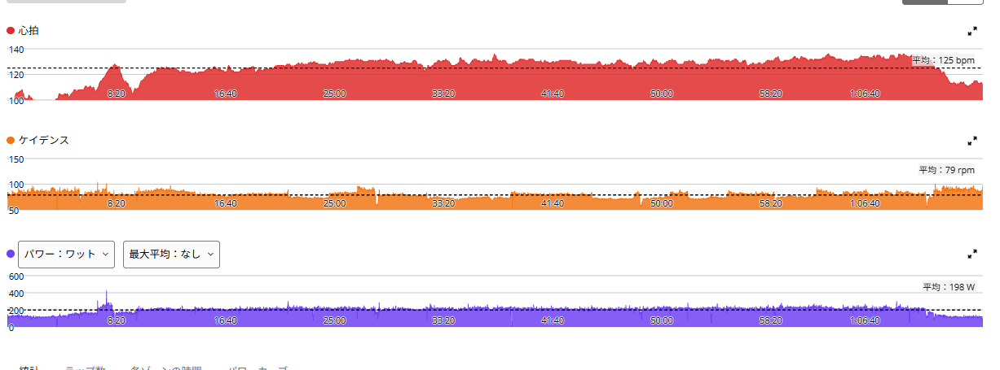
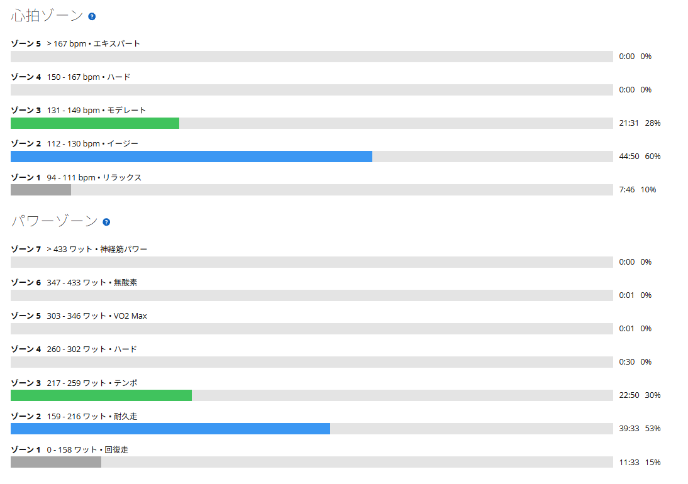

初めてちゃんとベース走をやったら、1時間300Wが急に高い壁に見えた
今日はローラーでベース走。これまでにも軽く走る日はあったが、ローラーで「ベース走」として狙ってやるのは今回が初めてだった。昨日はSST。その翌日に、強度を落としすぎず、でも高強度にはしない。そんな位置づけで、今日は1時間、一定出力を続けることにした。

数字だけ見れば、穏やかな60分
- 全体34.91km / 1時間14分29秒 / 運動量884kJ
- 負荷平均198W / NP205W / IF0.708 / TSS61.8 / FTP設定289W
- 心拍・回転平均125bpm / 最大136bpm / 平均79rpm
- 効果有酸素TE3.2（主な効果：ベース）/ 無酸素TE0.0 / 運動負荷100
- メイン1時間00分03秒 / 212W / 心拍平均129bpm・最大136bpm / 78rpm
ウォームアップ後、メインは約60分・212W。FTP289Wに対して約73％である。Garminの判定も、主な効果は「ベース（低強度有酸素）」。数字だけ見ると、そこまで大変そうには見えない。

脚は残っているのに「なんかきつい」
走る前は、200Wちょっとを1時間なら、かなり余裕だろうと思っていた。舐めていた。実際、脚だけで言えば余力はあった。「もう踏めない」という感じではない。息が上がるわけでもないし、脚がパンパンになるわけでもない。SSTでもない。閾値でもない。心拍も高くない。なのに、なんかきつい。一定出力をずっと続けるのが、思っていたよりずっと大変だった。今まであまり使ってこなかった領域を、ずっと使い続けている感じである。
普段はSSTや登りで高い出力を出すことが多い。でも、そういう走りには下りがあったり、レストがあったり、出力が落ちる時間がある。今日は60分間、ほぼずっと200W台。派手さはない。でも、逃げ場もない。心肺も脚も限界ではないのに、ずっと仕事を続けさせられる。これがベース走のしんどさなのか、と少し分かった。
9月9日の249W×40分とは別物だった
ローラーで一定出力を続けた日としては、9月9日に249Wで40分走った記録がある。あのときは最初は楽だったのに、40分後には何も残っていなかった。メイン40分の心拍平均は149bpm。今日は212Wで60分、129bpm。あちらは時間とともに追い詰められて最後に何も残らない疲れ方で、今日は限界が来ないまま、ずっときつさが続く疲れ方だった。同じ「一定」でも、疲れ方の種類がかなり違う。
昨日のSSTとは、使っている能力が違う
昨日はSSTの中に短い高トルク区間を入れて、277W・274W・242W。2本目で、古峰ヶ原後半みたいな腰の疲労や踏めなくなる感じが少し出た。今日はそれとはまったく違う疲労感である。昨日は「強い刺激」。今日は「一定の刺激を長く続ける」。同じ自転車でも、使っている能力がかなり違う感じがした。
SST翌日のベース走、面白いかもしれない
今回やってみて、SSTの翌日にベース走を入れるのはかなり面白いかもしれないと思った。高強度の翌日に、完全に休むのではなく、一定出力を長く続ける。脚を壊すほど追い込むわけではない。でも、ちゃんと練習にはなる。TSSは61.8。回復走ではない。ちゃんとベーストレーニングである。今後も、脚や膝の状態が問題なければ、SST翌日にこういうベース走を入れてみたい。
1時間300Wが、急に高い壁に見えた
212Wを1時間続けながら思った。これを300Wで1時間。かなり高い壁だな、と。「ローラーで1時間300W」は、6月からずっと掲げてきた目標である。数字としては分かっていたつもりだった。でも、今日初めてベース走をやって、一定出力を1時間続ける難しさを体で感じたことで、300Wという数字が急に現実味を持ってきた。212Wでも、思っていたよりずっと長い。そこから約90W上なら、もっともっと長く感じるはずである。
高い壁に見えたからといって、目標を変えるつもりはない。むしろ、必要なものが少し見えた感じがする。いきなり300Wを1時間やる必要はない。まずはSSTを20分×3本、ベースを60分、90分と安定して続ける、長い登りでも最後まで崩れず踏む。そのうえで、270Wを1時間、280Wを1時間、290Wを1時間、その先に300Wを1時間。そう考えると、壁というより階段である。
一段ずつ
初めてのベース走は、もっと楽だと思っていた。でも、脚には余力があるのに、一定出力を続けること自体がきつい。これは今まであまり鍛えてこなかったところかもしれない。高出力を出す練習、高トルクを使う練習、そして一定出力を長く続ける練習。全部必要なんだと思う。急いで登る必要はない。一段ずつ、コツコツやっていく。